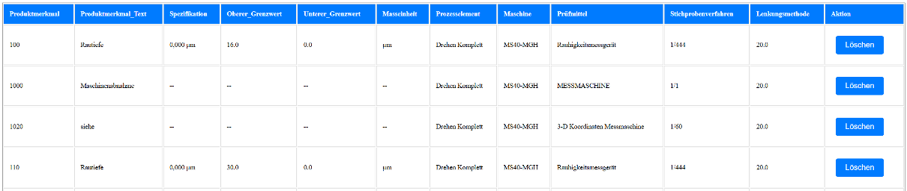
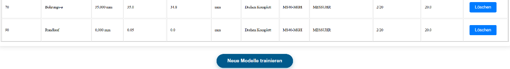

Training new Models
By clicking on the button Neue Daten verwalten on the Administration page you get to the Management and Integration of new Data page where it is possible to see the data which was submitted as correct but has not yet been used to train models with.
Management and Integration of new Data
The functionality of this page allows users to review new tuples that have not yet been used to train the models but are confirmed to be correct. These tuples can either be deleted or used to train new models.
 {kind=link}
{kind=link}
Loading bars visualize the loading progress when stashed data (data that has not yet been trained with) is fetched from the server after the page loads and when a new model is being trained.
<div class="loading-bar-container" id="loading-bar-container">
<div class="loading-bar-container" id="training-loading-bar-container" style="display:none;">
Blocking message that informs the user that the training is in progress and no further actions should be taken during this time.
<div class="popup-overlay" id="popup-overlay">
<div class="popup">
<h2>Modelltraining läuft...</h2>
<p>Bitte führen Sie während des Modelltrainings keine weiteren Aktionen durch.<br> Dies kann einige Minuten dauern.</p>
</div>
</div>
Error message if data could not be fetched, the actual HTML data or a message if no data is available.
<div class="data-box" id="data-box" style="display:none;">
{% if error %}
<p class="error">{{ error }}</p>
{% elif data %}
{{ data|safe }}
{% else %}
<p class="error">Keine Daten vorhanden</p>
{% endif %}
</div>
Buttons for starting new model training, managing already trained models and back to landing page
<div class="button-container">
<form id="train-form">
<button type="submit" class="styled-button">Neue Modelle trainieren</button>
</form>
<form action="/manage_models" method="GET" style="display:inline;">
<button type="submit" class="styled-button">Modelle verwalten</button>
</form>
<button onclick="window.location.href='/index'" class="styled-button">Zurück zur Startseite</button>
</div>
if rowCount > 0, a loading animation is shown.
Progress is incremented over time to simulate data loading
window.addEventListener('load', function() {
const loadingBarContainer = document.getElementById('loading-bar-container');
const loadingBar = document.getElementById('loading-bar');
const dataBox = document.getElementById('data-box');
const rowCount = {{ row_count }};
if (rowCount > 0) {
loadingBarContainer.style.display = 'block';
let progress = 0;
let step = Math.max(1, Math.round(100 / rowCount));
const interval = setInterval(() => {
progress += step;
loadingBar.style.width = Math.min(progress, 100) + '%';
if (progress >= 100) {
clearInterval(interval);
loadingBarContainer.style.display = 'none';
dataBox.style.display = 'block';
}
}, 50);
} else {
dataBox.style.display = 'block';
}
});
Triggering Model Training
shows a popup and training progress bar
sends POST request to /model_training
replaces page content with server response upon success
catches and shows error popup in case of failure
document.getElementById('train-form').addEventListener('submit', function(e) {
e.preventDefault();
const trainingBarContainer = document.getElementById('training-loading-bar-container');
const trainingBar = document.getElementById('training-loading-bar');
const popupOverlay = document.getElementById('popup-overlay');
popupOverlay.style.display = 'flex';
trainingBarContainer.style.display = 'block';
trainingBar.style.width = '0%';
let progress = 0;
const interval = setInterval(() => {
progress += 3;
trainingBar.style.width = progress + '%';
if (progress >= 100) {
clearInterval(interval);
}
}, 300);
fetch('/model_training', {
method: 'POST'
})
.then(response => response.text())
.then(html => {
document.open();
document.write(html);
document.close();
})
.catch(err => {
console.error('Fehler beim Modelltraining:', err);
popupOverlay.innerHTML = '<div class="popup"><h2>Fehler</h2><p>Das Modelltraining konnte nicht gestartet werden.</p></div>';
});
});
Managing existing Models
The Management of existing models page provides an overview of the most recently trained models and allows for restoring previous model versions.
Functionality
Model Overview: Displays up to three of the most recently trained machine learning models, including key performance metrics.
Warning Message: A highlighted warning (⚠️) informs the user that restoring a backup model will permanently replace the currently active model.
Dynamic Content Rendering:
If an error occurs while loading model data, the error is shown in red.
If model data is available, it is injected into the page as pre-formatted HTML using the safe Jinja2 filter.
<div class="container">
<h1>Modelle verwalten</h1>
<p>Hier sehen Sie die letzten drei trainierten Modelle mit ihren Leistungskennzahlen</p>
<p style="color: #dc3545; font-weight: bold;">⚠️ Hinweis: Das Wiederherstellen eines Back-Up Modells ersetzt das aktuelle Modell dauerhaft</p>
<div class="data-box">
{% if error %}
<p class="error">{{ error }}</p>
{% elif models %}
{{ models|safe }}
{% else %}
<p class="error">Keine Modelldaten gefunden</p>
{% endif %}
</div>
</div>
Notes
HTML and logic done by Johannes